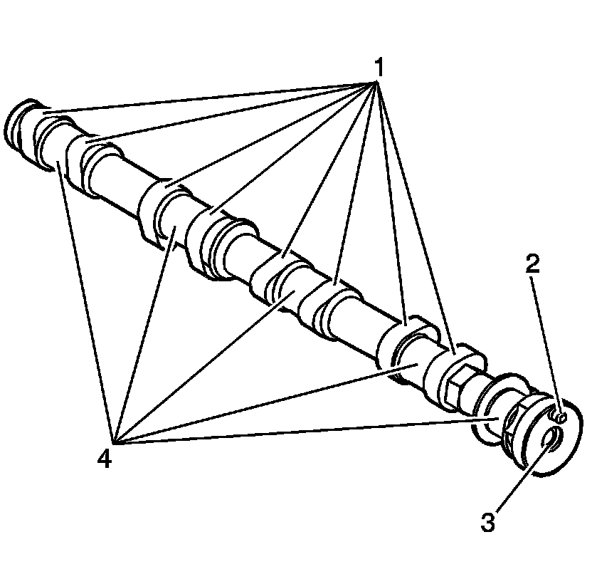
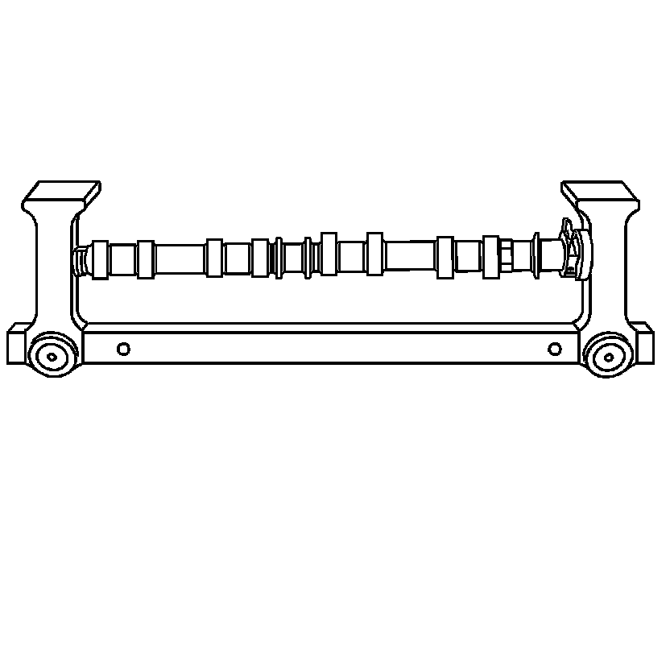
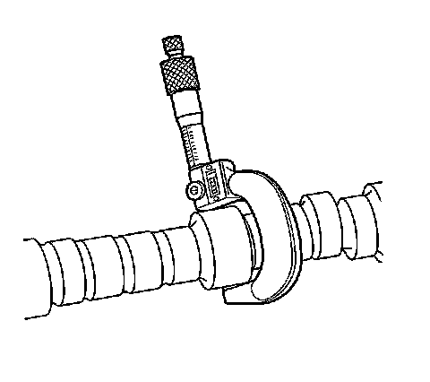
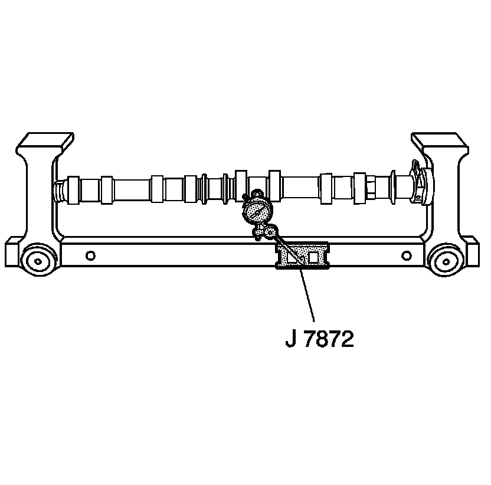
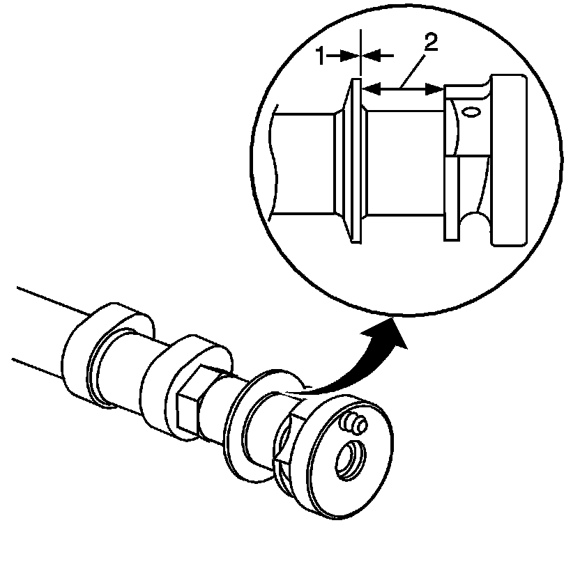
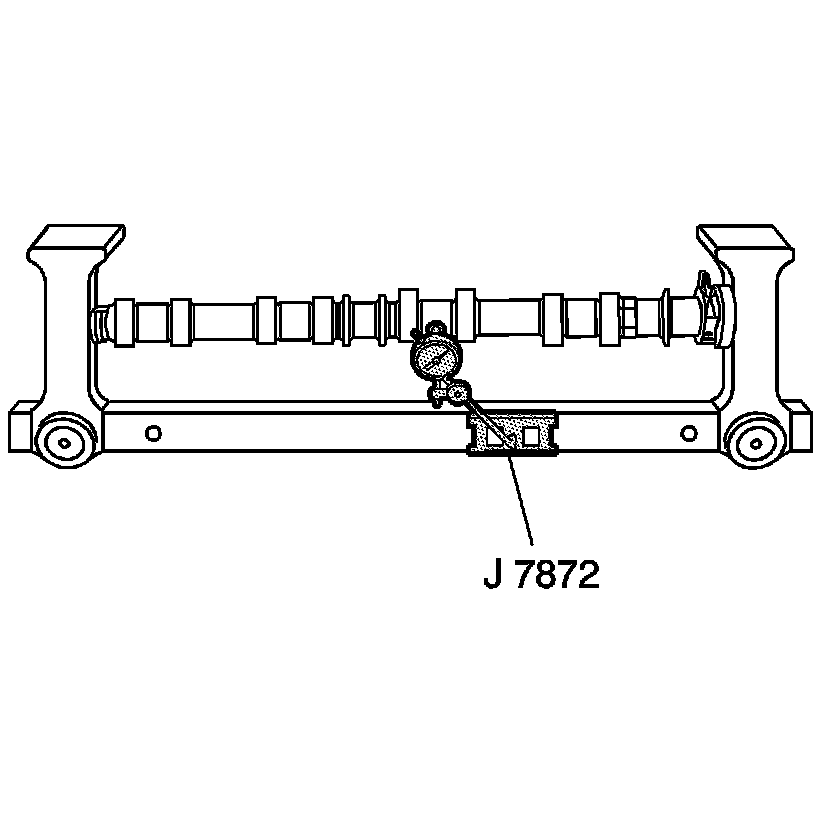
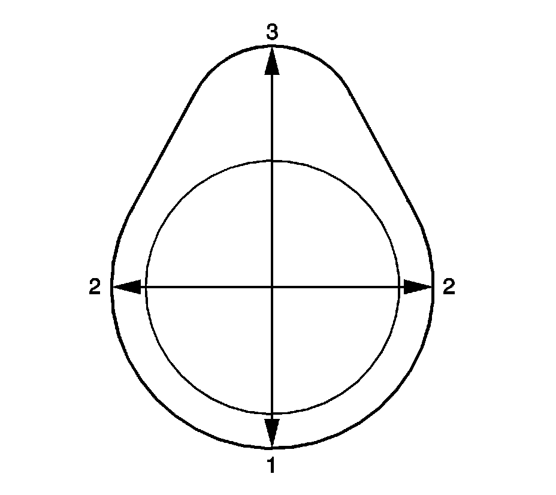

61. Camshaft Cleaning and Inspection
Camshaft Cleaning and Inspection
Tools Required
J 7872 Magnetic Base Dial Indicator
Cleaning Procedure
1. Clean the camshaft in solvent.
Caution: Refer to Safety Glasses Caution (Safety Glasses Warning) .
2. Dry the camshaft with compressed air.
3. Cover the camshafts with a clean oil soaked towel in order to prevent corrosion.
Visual Inspection Procedure

1. Inspect the camshaft sprocket locating pin (2) for damage or wear.
2. Inspect the threads (3) for the camshaft sprocket bolt.
3. Inspect the camshaft lobes (1) and journals (4) for the following conditions:
* Excessive scoring or pitting
* Discoloration from overheating
* Deformation from excessive wear, especially the camshaft lobes
Camshaft Measurement Procedure

1. With the camshaft in a suitable fixture, measure the camshaft for wear.

2. Measure the camshaft journals for diameter and out-of-round using an outside micrometer.
* If the diameter is smaller than 26.948 mm (1.061 in), replace the camshaft.
* If the out-of-round exceeds 0.022 mm (0.0009 in), replace the camshaft.

3. Measure the camshaft runout using J 7872 . Refer to Engine Mechanical Specifications (Specifications) .

4. Measure the camshaft thrust wall width (1) for wear using an inside micrometer. Refer to Engine Mechanical Specifications (Specifications) .
5. Measure the camshaft thrust wall surface (2) for runout using J 7872 . Refer to Engine Mechanical Specifications (Specifications) .
6. If the camshaft is damaged or worn beyond specifications, replace the camshaft. No machining of the camshaft is allowed.

7. Measure the camshaft lobes for wear using the J 7872 .

8. Place the J 7872 with the indicator tip on the base circle (1) of the camshaft lobe.
1. Place the J 7872 dial at zero.
2. Rotate the camshaft until the indicator tip is at the highest point on the lobe. This reading is the lift (3) of the camshaft lobe. Refer to Engine Mechanical Specifications (Specifications) .
3. If the indicated measurement is significantly lower than these specifications, replace the camshaft or engine performance will be reduced.